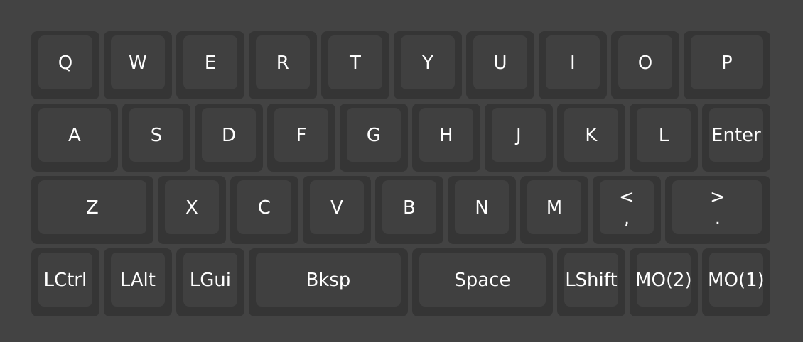
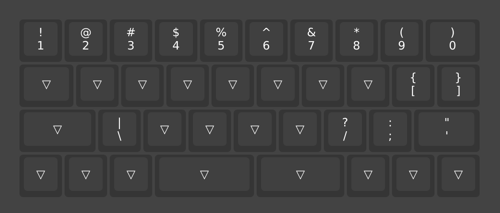
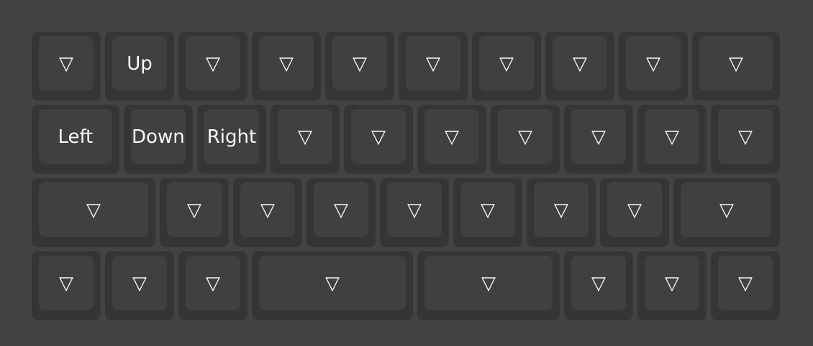
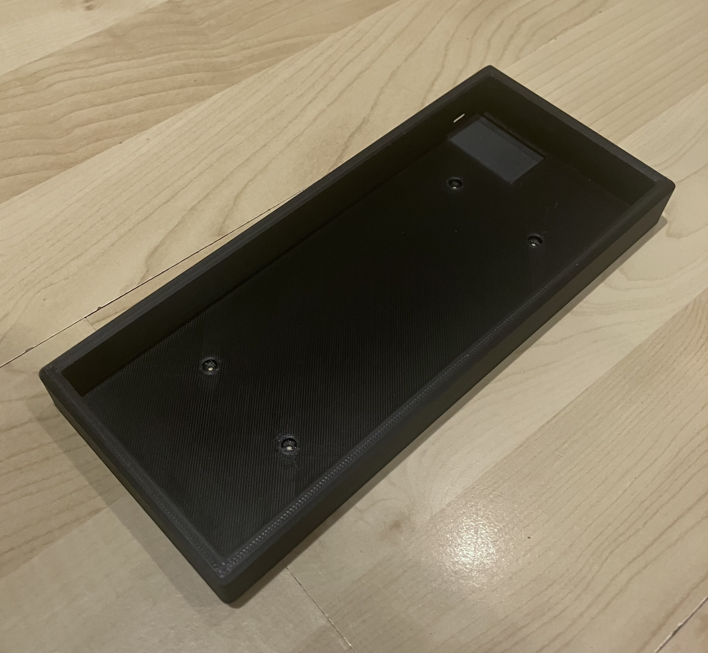
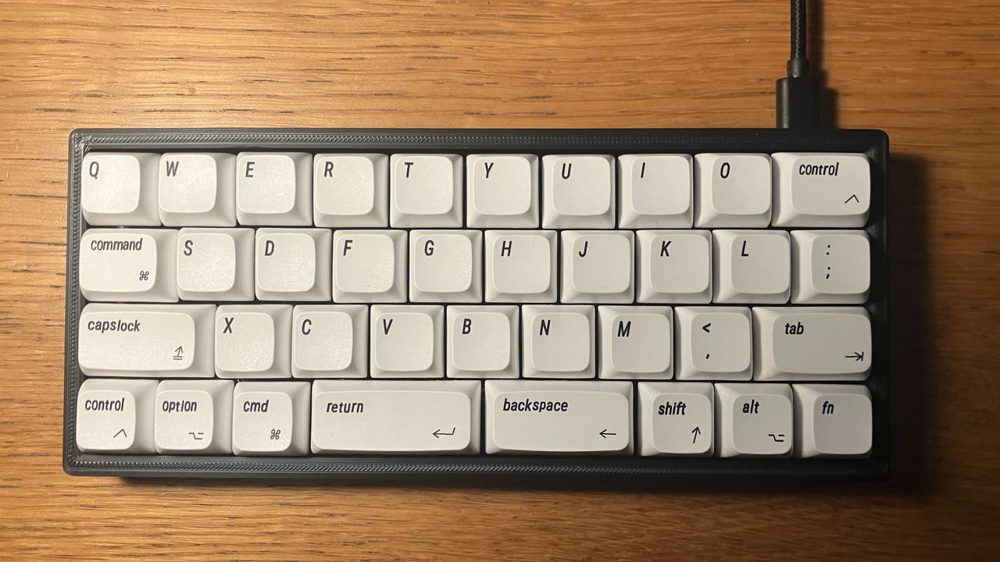

After the building process, I was looking forward to actually programming and using the keyboard, however I ran into a few issues and managed to brick the whole keyboard (for a few minutes).
Firstly, I tried to use VIA, and once I had found a HID compatible browser (Chrome) I found that it didn’t work. Not sure why, but no matter what OS or browser I tried, it wouldn’t work. Then I tried to install QMK, and after reading that it was ‘slow’ on Apple Sillicon Macs, I installed it on my old Intel Macbook Air. Using Brew, a package manager for macOS, I set about installing QMK. One odd issue I encountered was Brew finding the dependancies for QMK, and compiling them from scratch. Just compiling Python 3.13 took over 40 minutes, and QMK had a lot of dependancies. If I was doing something wrong I would love to find out what it was, as the whole install process lasted overnight.
This brings us to the morning of the 12th, I sit down to a fresh install of QMK and begin trying to compile my keyboard layout. Since the QAZ uses a Raspberry Pi 2040, the Firmware files need to be converted to a .uf2 file. While it isn’t immediately clear how this is done, After some research i managed to generate a key map using QMK Configurator, and built it into a .uf2 file.
The photos of the PCB shows a small button on the back that is used to place the keyboard into flashing mode, but upon tearing the keyboard down I found no such button. Upon further research, I found that on RP2040 boards, you have to hold key 0,0 to put it into flashing mode. This is normally the top left key, in my case ‘Q’. After successfully placing my keyboard into flashing mode, I tentatively copied my customised firmware over to the microcontroller. After the keyboard disconnected and rebooted, I was excited to try out my custom layout. I was instead surprised to find that none of my keys worked, ‘G’ would type ’U’ and holding down ‘N’ + ‘B’ typed ‘J’. Obviously something had gone wrong somewhere in the process, but the next issue had become apparent, the new firmware had changed the keymap, and meant that I didn’t know what key 0,0 was anymore! This meant that I was unable to put the keyboard into flashing mode, nor could i actually use the nice new keyboard I had built. Luckily, I was able to dissasemble the keyboard for the 2nd time, and short the contacts where the button was supposed to be to reset the microcontroller and place it into flashing mode once again. Temporary heart attack over, I flashed the original firmware and decided to go back to square one. I sure am glad I wasted many hours installing QMK. It’s definitely something i’ll have to go back to in the future and mess round with some more. Maybe on a cheaper, properly built keyboard.
Earlier on, I mentioned my attempts at using Via to program my keyboard, to no success. I had seen references to Via/Vial and had naively assumed that they were the same software, shocking news, they are not… While Via didn’t work at all, with any keyboard I tried, Vial picked the QAZ straight up and worked perfectly. Within 5 minutes, I had programmed my keyboard to do CAPITAL LETTERS, Num8er2, and Symbols!@£. Oficially, I think I wasted around 24 hours trying to program my keyboard, only to complete the whole task in the time it takes to finish a coffee. fantastic.
At the moment, I am using 3 layers, my main alphabet keys, a numbers and symbols layer and a layer that converts my ‘wasd’ keys into arrows to move around text. I suspect I will change this quite a bit as I get used to typing on the keyboard, but for a first try this seems to work well. Challenging enough to be fun, and makes me engage my brain when working out symbols.

My main Alpabet layer

Numbers and Symbols on Layer 2

WASD for arrow keys
Typing on the keyboard itself is really fun, it only took a couple of days before I was able to get up to full speed (not that fast anyway). Most of this article and the last one were typed on the board, and is probably how I will write most of my blog posts from now on. In terms of sound, the board is loud enough to sound satisfying while typing, but quiet enough to not get too annoying, especially with others in the same room. It could do with some lightly taller feet at the back to give it some angle, but this is an easy fix.
For my first time building a custom keyboard it has been really fun, definitely a good starting point and very affordable. Also a surprisingly easy to use layout!
Thanks for reading, hope you’ve enjoyed following along with this. Speak to you soon!
In this post, I will document my experience custom building my first ever Custom Mechanical Keyboard, A QAZ layout sub 40%. This post will focus on building the keyboard, I will release a follow up post talking about my experience programming and using the keyboard later.
This project came about while I was looking at redoing my desk/workspace. I was thinking of going for a small mechaincal keyboard, 60% or smaller. Having previously used both a TKL (Keychron C3 Pro) and a 60% (Keychron K3) I found that I liked the idea of a smaller keyboard as it freed up a lot of desk space, and looked tidier. I was also interested in buidling a custom keyboard and the experience of customising the keyswitches and caps, really being able to fine tune the sound and feel of the keyboard.
With this in the back of my mind for a while, I stumbled across a Reddit post of someone showing off their new ‘QAZ’ keyboard. This ignited my curiosity, and after a few days of research, I had a QAZ PCB on order and had begun planning my first custom mechanical keyboard.
While the idea of a QAZ layout might seem strange and inconvinient at first, I think it looks likle a lot of fun, having to program it and really think about what you're typing and how you do it.
Item |
price |
|---|---|
PCB - CBKBD QAZ V2 Hotswap |
£28 |
Switches - Gateron Oil King (4 Packs of 10) |
£26 |
GMK Screw In Stabiliser (2x 2U) |
£5 |
M2x5mm Standoffs (10) |
n/a |
M2x6mm Machine Screws (Pack of 100) |
|
M2 Brass Washer (Pack of 100) |
|
12.7x3.5mm Rubber Feet (Pack of 24) |
|
Vintage Sytle Apple Macintosh Keycaps |
£17 |
I bought my PCB from KeebSupply, the EU supplier for Coffe Break Keyboards (CBKBD). I chose the Hot-Swap version of the board as I didnt want to risk testing out my soldering skills on this project. Shipping from KeebSupply was quite fast from Germany to the UK, and the PCB came well packaged.
From my previous experince with the Keychron K3 using Low Profile Gateron Red Switches, I knew I wanted linear switches as opposed to tactile or clicky. The one element of the K3 that I disliked was the low profile of the switches and caps. With this in mind I decided to go for the Gateron Oil King, which got good feedback and seemed like a well regarded switch. I also liked the sound of them from the typing tests I had seen online. I ordered from Mechboards in the UK, and the shipping was very quick and the items were well packaged (they even included a cool sticker).
I didn't put very much thought into the stabilisers, I just went for whatever Mechboards had in stock. I can't imagine you can go too badly wrong with stabilisers.
I had initially planned to use a set of GMK Clone Thinkcaps, in the theme of an old IBM Thinkpad Keyboard. When they arrived I decided that I actually wanted to use them on my other keyboard (Keychron C3), so I decied to get a cheap set of 'Macintosh' styled caps instead. They also have a cool retro vibe to them and feel suprisingly good!
I chose the additional parts for assembely (Standoffs, Washers, Bolts and Feet) based purely off of what was available from Farnell. As I find out later, these were far from ideal. The quality and packaging was top notch, but i could've done a better job selecting them. I've given some recommendations later on as to what you should order if you decide to do this yourself.

Case 3D Printed on a Creality Ender V3 using black PLA+ (Design by Dingus McGee)
The first part I obtained was the case, as this was easily 3D printed at home. I used my Creality Ender V3 and printed at the ‘Optimal’ speed using Creality PLA+. The print came out really nice, with no obvious issues. I decided to start off with the ‘No Handle’ case, but I might print off the case with the handle for fun, maybe in a different colour.
The first issue I encountered was the standoffs, despite ordering the shortest available, they were far too long too long and went straight through the case leaving them a bit loose. Luckily, I was able to trim them down and make them fit. While they have a little bit of play, when the keyboard is on the desk it feels very solid, and only shifts if you try and move it. This could be solved by making the bottom of the case slightly thicker or by adding nuts to the bottom but isn't particularly needed.
Then I placed the PCB into the case, it fit perfectly but the 6mm Machine Bolts were a bit too long. I was able to stack up 7 washers onto the bolts to secure it, but I would definitely recommend using shorter bolts especially if you need to disassemble the board for troubleshooting. Probably around 3-4mm would work best.
Next, I added the stabilisers for the space and backspace keys along the bottom row. Initially these were quite stiff, and in lieu of proper lubricant, a few drops of 3-IN-ONE worked well enough. Maybe at some point I’ll take the board apart and properly lube them. Mechboards did offer a pre-lubricating service which I would definitely consider using in the future.
Luckily, after these small issues, the rest of the build went perfectly. All of the switches went in perfectly, i’m really happy with the sound of the oil kings, very clunky and smooth. The space and backspace buttons with the stabilisers don’t feel perfect, but i’m happy to live with them for a first try.
Once I was finished I plugged the Keyboard straight into my laptop and got to typing, this article in fact! The split space/backspace keys were picked up straight away. No way of typing numbers or symbols, but all it needs is some simple programming (more of this 'simple' process in the next post...)

Well, I hope you enjoyed this small post on my QAZ build, and I hope it helps you if you’re thinking of building your own. I would really reccomend it, as it has been a very fun process and an affordable way to learn the basics of building custom keyboards. I'm already researching the next keyboard I want! As I mentioned, the next post will cover my experience programming the keyboard and my thoughts after using it for a few days.